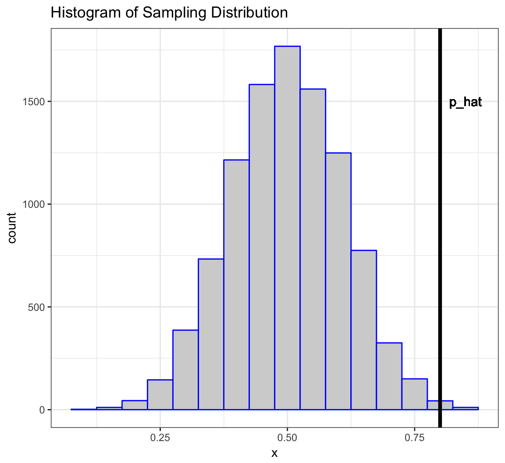
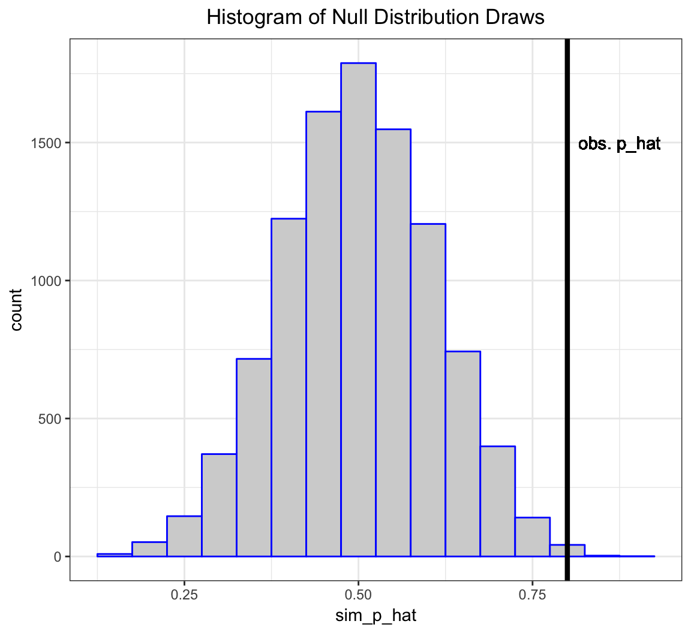
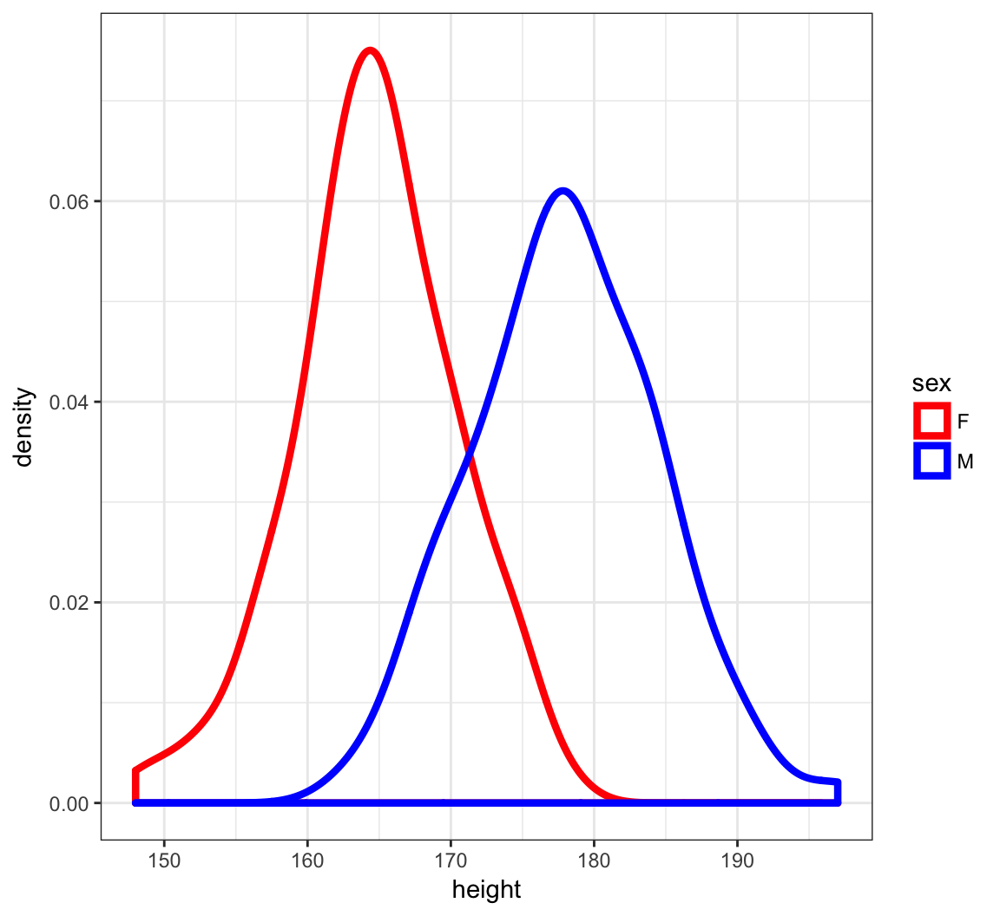

QCB 508 – Week 5
John D. Storey
Spring 2017

Statistical Inference
Data Collection as a Probability
- Suppose data are collected in such a way that it is randomly observed according to a probability distribution
- If that probability distribution can be parameterized, then it is possible that the parameters describe key characteristics of the population of interest
- Statistical inference reverse engineers this process to estimate the unknown values of the parameters and express a measure of uncertainty about these estimates
Example: Simple Random Sample
Individuals are uniformly and independently randomly sampled from a population.
The measurements taken on these individuals are then modeled as random variables, specifically random realizations from the complete population of values.
Simple random samples form the basis of modern surveys.
Example: Randomized Controlled Trial
Individuals under study are randomly assigned to one of two or more available treatments.
This induces randomization directly into the study and breaks the relationship between the treatments and other variables that may be influencing the response of interest.
This is the gold standard study design in clinical trials to assess the evidence that a new drug works on a given disease.
Parameters and Statistics
- A parameter is a number that describes a population
- A parameter is often a fixed number
- We usually do not know its value
- A statistic is a number calculated from a sample of data
- A statistic is used to estimate a parameter
Sampling Distribution
The sampling distribution of a statistic is the probability disribution of the statistic under repeated realizations of the data from the assumed data generating probability distribution.
The sampling distribution is how we connect an observed statistic to the population.
Central Dogma of Inference
Example: Fair Coin?
Suppose I claim that a specific coin is fair, i.e., that it lands on heads or tails with equal probability.
I flip it 20 times and it lands on heads 16 times.
- My data is \(x=16\) heads out of \(n=20\) flips.
- My data generation model is \(X \sim \mbox{Binomial}(20, p)\).
- I form the statistic \(\hat{p} = 16/20\) as an estimate of \(p\).
Example (cont’d)
Let’s simulate 10,000 times what my estimate would look like if \(p=0.5\) and I repeated the 20 coin flips over and over.
> x <- replicate(n=1e4, expr=rbinom(1, size=20, prob=0.5))
> sim_p_hat <- x/20
> my_p_hat <- 16/20What can I do with this information?
Example (cont’d)

Inference Goals and Strategies
Basic Idea
Data are collected in such a way that there exists a reasonable probability model for this process that involves parameters informative about the population.
Common Goals:
- Form point estimates the parameters
- Quantify uncertainty on the estimates
- Test hypotheses on the parameters
Normal Example
Suppose a simple random sample of \(n\) data points is collected so that the following model of the data is reasonable: \(X_1, X_2, \ldots, X_n\) are iid Normal(\(\mu\), \(\sigma^2\)).
The goal is to do inference on \(\mu\), the population mean.
For simplicity, assume that \(\sigma^2\) is known (e.g., \(\sigma^2 = 1\)).
Point Estimate of \(\mu\)
There are a number of ways to form an estimate of \(\mu\), but one that has several justifications is the sample mean:
\[\hat{\mu} = \overline{x} = \frac{1}{n}\sum_{i=1}^n x_i,\]
where \(x_1, x_2, \ldots, x_n\) are the observed data points.
Sampling Distribution of \(\hat{\mu}\)
If we were to repeat this study over and over, how would \(\hat{\mu}\) behave?
\[\hat{\mu} = \overline{X} = \frac{1}{n}\sum_{i=1}^n X_i\]
\[\overline{X} \sim \mbox{Normal}(\mu, \sigma^2/n)\]
How do we use this to quantify uncertainty and test hypotheses?
Pivotal Statistic
One very useful strategy is to work backwards from a pivotal statistic, which is a statistic that does not depend on any unknown paramaters.
Example:
\[\frac{\overline{X} - \mu}{\sigma/\sqrt{n}} \sim \mbox{Normal}(0,1)\]
Note that in general for a rv \(Y\) it is the case that \((Y - \operatorname{E}[Y])/\sqrt{\operatorname{Var}(Y)}\) has population mean 0 and variance 1.
Confidence Intervals
Goal
Once we have a point estimate of a parameter, we would like a measure of its uncertainty.
Given that we are working within a probabilistic framework, the natural language of uncertainty is through probability statements.
We interpret this measure of uncertainty in terms of hypothetical repetitions of the sampling scheme we used to collect the original data set.
Formulation
Confidence intervals take the form
\[(\hat{\mu} - C_{\ell}, \hat{\mu} + C_{u})\]
where
\[{\rm Pr}(\mu - C_{\ell} \leq \hat{\mu} \leq \mu + C_{u})\]
forms the “level” or coverage probability of the interval.
Interpretation
If we repeat the study many times, then the CI \((\hat{\mu} - C_{\ell}, \hat{\mu} + C_{u})\) will contain the true value \(\mu\) with a long run frequency equal to \({\rm Pr}(\mu - C_{\ell} \leq \hat{\mu} \leq \mu + C_{u})\).
A CI calculated on an observed data set is not intepreted as: “There is probability \({\rm Pr}(\mu - C_{\ell} \leq \hat{\mu} \leq \mu + C_{u})\) that \(\mu\) is in our calculated \((\hat{\mu} - C_{\ell}, \hat{\mu} + C_{u})\).” Why not?
A Normal CI
If \(Z \sim\) Normal(0,1), then \({\rm Pr}(-1.96 \leq Z \leq 1.96) = 0.95.\)
\[\begin{eqnarray} 0.95 & = & {\rm Pr} \left(-1.96 \leq \frac{\hat{\mu} - \mu}{\sigma/\sqrt{n}} \leq 1.96 \right) \\ \ & = & {\rm Pr} \left(-1.96 \frac{\sigma}{\sqrt{n}} \leq \hat{\mu} - \mu \leq 1.96\frac{\sigma}{\sqrt{n}} \right) \\ \ & = & {\rm Pr} \left(\mu-1.96\frac{\sigma}{\sqrt{n}} \leq \hat{\mu} \leq \mu+1.96\frac{\sigma}{\sqrt{n}} \right) \end{eqnarray}\]Therefore, \(\left(\hat{\mu} - 1.96\frac{\sigma}{\sqrt{n}}, \hat{\mu} + 1.96\frac{\sigma}{\sqrt{n}}\right)\) forms a 95% confidence interval of \(\mu\).
A Simulation
> mu <- 5
> n <- 20
> x <- replicate(10000, rnorm(n=n, mean=mu)) # 10000 studies
> m <- apply(x, 2, mean) # the estimate for each study
> ci <- cbind(m - 1.96/sqrt(n), m + 1.96/sqrt(n))
> head(ci)
[,1] [,2]
[1,] 4.916469 5.793008
[2,] 4.507025 5.383563
[3,] 4.672412 5.548950
[4,] 4.791153 5.667692
[5,] 4.413962 5.290500
[6,] 4.514039 5.390578> cover <- (mu > ci[,1]) & (mu < ci[,2])
> mean(cover)
[1] 0.9464Normal\((0,1)\) Percentiles
Above we constructed a 95% CI. How do we construct (1-\(\alpha\))-level CIs?
Let \(z_{\alpha}\) be the \(\alpha\) percentile of the Normal(0,1) distribution.
If \(Z \sim\) Normal(0,1), then
\[\begin{eqnarray*} 1-\alpha & = & {\rm Pr}(z_{\alpha/2} \leq Z \leq z_{1-\alpha/2}) \\ \ & = & {\rm Pr}(-|z_{\alpha/2}| \leq Z \leq |z_{\alpha/2}|) \end{eqnarray*}\]Commonly Used Percentiles
> # alpha/2 upper and lower percentiles for alpha=0.05
> qnorm(0.025)
[1] -1.959964
> qnorm(0.975)
[1] 1.959964> # alpha/2 upper and lower percentiles for alpha=0.10
> qnorm(0.05)
[1] -1.644854
> qnorm(0.95)
[1] 1.644854\((1-\alpha)\)-Level CIs
If \(Z \sim\) Normal(0,1), then \({\rm Pr}(-|z_{\alpha/2}| \leq Z \leq |z_{\alpha/2}|) = 1-\alpha.\)
Repeating the steps from the 95% CI case, we get the following is a \((1-\alpha)\)-Level CI for \(\mu\):
\[\left(\hat{\mu} - |z_{\alpha/2}| \frac{\sigma}{\sqrt{n}}, \hat{\mu} + |z_{\alpha/2}| \frac{\sigma}{\sqrt{n}}\right)\]
One-Sided CIs
The CIs we have considered so far are “two-sided”. Sometimes we are also interested in “one-sided” CIs.
If \(Z \sim\) Normal(0,1), then \(1-\alpha = {\rm Pr}(Z \geq -|z_{\alpha}|)\) and \(1-\alpha = {\rm Pr}(Z \leq |z_{\alpha}|).\) We can use this fact along with the earlier derivations to show that the following are valid CIs:
\[(1-\alpha)\mbox{-level upper: } \left(-\infty, \hat{\mu} + |z_{\alpha}| \frac{\sigma}{\sqrt{n}}\right)\]
\[(1-\alpha)\mbox{-level lower: } \left(\hat{\mu} - |z_{\alpha}| \frac{\sigma}{\sqrt{n}}, \infty\right)\]
Hypothesis Tests
Example: HT on Fairness of a Coin
Suppose I claim that a specific coin is fair, i.e., that it lands on heads or tails with equal probability.
I flip it 20 times and it lands on heads 16 times.
- My data is \(x=16\) heads out of \(n=20\) flips.
- My data generation model is \(X \sim \mbox{Binomial}(20, p)\).
- I form the statistic \(\hat{p} = 16/20\) as an estimate of \(p\).
More formally, I want to test the hypothesis: \(H_0: p=0.5\) vs. \(H_1: p \not=0.5\) under the model \(X \sim \mbox{Binomial}(20, p)\) based on the test statistic \(\hat{p} = X/n\).
Example (cont’d): Null Distribution
Let’s simulate 10,000 times what my estimate would look like if \(p=0.5\) and I repeated the 20 coin flips over and over.
> x <- replicate(n=1e4, expr=rbinom(1, size=20, prob=0.5))
> sim_p_hat <- x/20
> my_p_hat <- 16/20The vector sim_p_hat contains 10,000 draws from the null distribution, i.e., the distribution of my test statstic \(\hat{p} = X/n\) when \(H_0: p=0.5\) is true.

Example (cont’d): P-value
The deviation of the test statistic from the null hypothesis can be measured by \(|\hat{p} - 0.5|\).
Let’s compare our observed deviation \(|16/20 - 0.5|\) to the 10,000 simulated null data sets. Specifically, let’s calculate the frequency by which these 10,000 cases are as or more extreme than the observed test statistic.
> sum(abs(sim_p_hat-0.5) >= abs(my_p_hat-0.5))/1e4
[1] 0.0077This quantity is called the p-value of the hypothesis test.
A Caveat
This example is a simplification of a more general framework for testing statistical hypotheses.
Given the intuition provided by the example, let’s now formalize these ideas.
Definition
- A hypothesis test or significance test is a formal procedure for comparing observed data with a hypothesis whose truth we want to assess
- The results of a test are expressed in terms of a probability that measures how well the data and the hypothesis agree
- The null hypothesis (\(H_0\)) is the statement being tested, typically the status quo
- The alternative hypothesis (\(H_1\)) is the complement of the null, and it is often the “interesting” state
Return to Normal Example
Let’s return to our Normal example in order to demonstrate the framework.
Suppose a simple random sample of \(n\) data points is collected so that the following model of the data is reasonable: \(X_1, X_2, \ldots, X_n\) are iid Normal(\(\mu\), \(\sigma^2\)).
The goal is to do test a hypothesis on \(\mu\), the population mean.
For simplicity, assume that \(\sigma^2\) is known (e.g., \(\sigma^2 = 1\)).
HTs on Parameter Values
Hypothesis tests are usually formulated in terms of values of parameters. For example:
\[H_0: \mu = 5\]
\[H_1: \mu \not= 5\]
Note that the choice of 5 here is arbitrary, for illustrative purposes only. In a typical real world problem, the values that define the hypotheses will be clear from the context.
Two-Sided vs. One-Sided HT
Hypothesis tests can be two-sided or one-sided:
\[H_0: \mu = 5 \mbox{ vs. } H_1: \mu \not= 5 \mbox{ (two-sided)}\]
\[H_0: \mu \leq 5 \mbox{ vs. } H_1: \mu > 5 \mbox{ (one-sided)}\]
\[H_0: \mu \geq 5 \mbox{ vs. } H_1: \mu < 5 \mbox{ (one-sided)}\]
Test Statistic
A test statistic is designed to quantify the evidence against the null hypothesis in favor of the alternative. They are usually defined (and justified using math theory) so that the larger the test statistic is, the more evidence there is.
For the Normal example and the two-sided hypothesis \((H_0: \mu = 5 \mbox{ vs. } H_1: \mu \not= 5)\), here is our test statistic:
\[ |z| = \frac{\left|\overline{x} - 5\right|}{\sigma/\sqrt{n}} \]
What would the test statistic be for the one-sided hypothesis tests?
Null Distribution (Two-Sided)
The null distribution is the sampling distribution of the test statistic when \(H_0\) is true.
We saw earlier that \(\frac{\overline{X} - \mu}{\sigma/\sqrt{n}} \sim \mbox{Normal}(0,1).\)
When \(H_0\) is true, then \(\mu=5\). So when \(H_0\) is true it follows that
\[Z = \frac{\overline{X} - 5}{\sigma/\sqrt{n}} \sim \mbox{Normal}(0,1)\]
and then probabiliy calculations on \(|Z|\) are straightforward. Note that \(Z\) is pivotal when \(H_0\) is true!
Null Distribution (One-Sided)
When performing a one-sided hypothesis test, such as \(H_0: \mu \leq 5 \mbox{ vs. } H_1: \mu > 5\), the null distribution is typically calculated under the “least favorable” value, which is the boundary value.
In this example it would be \(\mu=5\) and we would again utilize the null distribution \[Z = \frac{\overline{X} - 5}{\sigma/\sqrt{n}} \sim \mbox{Normal}(0,1).\]
P-values
The p-value is defined to be the probability that a test statistic from the null distribution is as or more extreme than the observed statistic. In our Normal example on the two-sided hypothesis test, the p-value is
\[{\rm Pr}(|Z^*| \geq |z|)\]
where \(Z^* \sim \mbox{Normal}(0,1)\) and \(|z|\) is the value of the test statistic calculated on the data (so it is a fixed number once we observe the data).
Calling a Test “Significant”
A hypothesis test is called statistically significant — meaning we reject \(H_0\) in favor of \(H_1\) — if its p-value is sufficiently small.
Commonly used cut-offs are 0.01 or 0.05, although these are not always appropriate and they are historical artifacts.
Applying a specific p-value cut-off to determine significance determines an error rate, which we define next.
Types of Errors
There are two types of errors that can be committed when performing a hypothesis test.
- A Type I error or false positive is when a hypothesis test is called signficant and the null hypothesis is actually true.
- A Type II error or false negative is when a hypothesis test is not called signficant and the alternative hypothesis is actually true.
Error Rates
- The Type I error rate or false positive rate is the probability of this type of error given that \(H_0\) is true.
- If a hypothesis test is called significant when p-value \(\leq \alpha\) then it has a Type I error rate equal to \(\alpha\).
- The Type II error rate or false negative rate is the probability of this type of error given that \(H_1\) is true.
- The power of a hypothesis test is \(1 -\) Type II error rate.
Hypothesis tests are usually derived with a goal to control the Type I error rate while maximizing the power.
Maximum Likelihood Estimation
The Normal Example
We formulated both confidence intervals and hypothesis tests under the following idealized scenario:
Suppose a simple random sample of \(n\) data points is collected so that the following model of the data is reasonable: \(X_1, X_2, \ldots, X_n\) are iid Normal(\(\mu\), \(\sigma^2\)). The goal is to do inference on \(\mu\), the population mean. For simplicity, assume that \(\sigma^2\) is known (e.g., \(\sigma^2 = 1\)).
There is a good reason why we did this.
MLE \(\rightarrow\) Normal Pivotal Statistics
The random variable distributions we introduced last week have maximum likelihood estimators (MLEs) that can be standardized to yield a pivotal statistic with a Normal(0,1) distribution based on MLE theory.
For example, if \(X \sim \mbox{Binomial}(n,p)\) then \(\hat{p}=X/n\) is the MLE. For large \(n\) it approximately holds that \[ \frac{\hat{p} - p}{\sqrt{\frac{\hat{p}(1-\hat{p})}{n}}} \sim \mbox{Normal}(0,1). \]
Likelihood Function
Suppose that we observe \(x_1, x_2, \ldots, x_n\) according to the model \(X_1, X_2, \ldots, X_n \sim F_{\theta}\). The joint pdf is \(f(\boldsymbol{x} ; \theta)\). We view the pdf as being a function of \(\boldsymbol{x}\) for a fixed \(\theta\).
The likelihood function is obtained by reversing the arguments and viewing this as a function of \(\theta\) for a fixed, observed \(\boldsymbol{x}\):
\[L(\theta ; \boldsymbol{x}) = f(\boldsymbol{x} ; \theta).\]
Log-Likelihood Function
The log-likelihood function is
\[ \ell(\theta ; \boldsymbol{x}) = \log L(\theta ; \boldsymbol{x}).\]
When the data are iid, we have
\[ \ell(\theta ; \boldsymbol{x}) = \log \prod_{i=1}^n f(x_i ; \theta) = \sum_{i=1}^n \log f(x_i ; \theta).\]
Calculating MLEs
The maximum likelihood estimate is the value of \(\theta\) that maximizes \(L(\theta ; \boldsymbol{x})\) for an observe data set \(\boldsymbol{x}\).
\[\begin{align*} \hat{\theta}_{{\rm MLE}} & = \operatorname{argmax}_{\theta} L(\theta ; \boldsymbol{x}) \\ & = \operatorname{argmax}_{\theta} \ell (\theta ; \boldsymbol{x}) \\ & = \operatorname{argmax}_{\theta} L (\theta ; T(\boldsymbol{x})) \end{align*}\]where the last equality holds for sufficient statistics \(T(\boldsymbol{x})\).
The MLE can usually be calculated analytically or numerically.
Properties
When “certain regularity assumptions” are true, the following properties hold for MLEs.
- Consistent
- Equivariant
- Asymptotically Normal
- Asymptotically Efficient (or Optimal)
- Approximate Bayes Estimator
Assumptions and Notation
We will assume that \(X_1, X_2, \ldots, X_n \stackrel{{\rm iid}}{\sim} F_{\theta}\) and let \(\hat{\theta}_n\) be the MLE of \(\theta\) based on the \(n\) observations.
The only exception is for the Binomial distribution where we will assume that \(X \sim \mbox{Binomial}(n, p)\), which is the sum of \(n\) iid \(\mbox{Bernoulli}(p)\) rv’s.
We will assume that the “certain regularity assumptions” are true in the following results.
Consistency
An estimator is consistent if it converges in probability to the true parameter value. MLEs are consistent so that as \(n \rightarrow \infty\),
\[\hat{\theta}_n \stackrel{P}{\rightarrow} \theta,\]
where \(\theta\) is the true value.
Equivariance
If \(\hat{\theta}_n\) is the MLE of \(\theta\), then \(g\left(\hat{\theta}_n\right)\) is the MLE of \(g(\theta)\).
Example: For the Normal\((\mu, \sigma^2)\) the MLE of \(\mu\) is \(\overline{X}\). Therefore, the MLE of \(e^\mu\) is \(e^{\overline{X}}\).
Fisher Information
The Fisher Information of \(X_1, X_2, \ldots, X_n \stackrel{{\rm iid}}{\sim} F_{\theta}\) is:
\[\begin{align*} I_n(\theta) & = \operatorname{Var}\left( \frac{d}{d\theta} \log f(\boldsymbol{X}; \theta) \right) = \sum_{i=1}^n \operatorname{Var}\left( \frac{d}{d\theta} \log f(X_i; \theta) \right) \\ & = - \operatorname{E}\left( \frac{d^2}{d\theta^2} \log f(\boldsymbol{X}; \theta) \right) = - \sum_{i=1}^n \operatorname{E}\left( \frac{d^2}{d\theta^2} \log f(X_i; \theta) \right) \end{align*}\]
Standard Error
In general, the standard error of the standard deviation of sampling distribution of an estimate or statistic.
For MLEs, the standard error is \(\sqrt{{\operatorname{Var}}\left(\hat{\theta}_n\right)}\). It has the approximation
\[\operatorname{se}\left(\hat{\theta}_n\right) \approx \frac{1}{\sqrt{I_n(\theta)}}\] and the standard error estimate is
\[\hat{\operatorname{se}}\left(\hat{\theta}_n\right) = \frac{1}{\sqrt{I_n\left(\hat{\theta}_n\right)}}.\]
Asymptotic Normal
MLEs converge in distribution to the Normal distribution. Specifically, as \(n \rightarrow \infty\),
\[\frac{\hat{\theta}_n - \theta}{{\operatorname{se}}\left(\hat{\theta}_n\right)} \stackrel{D}{\longrightarrow} \mbox{Normal}(0,1)\] and
\[\frac{\hat{\theta}_n - \theta}{\hat{{\operatorname{se}}}\left(\hat{\theta}_n\right)} \stackrel{D}{\longrightarrow} \mbox{Normal}(0,1).\]
Asymptotic Pivotal Statistic
By the previous result, we now have an approximate (asymptotic) pivotal statistic:
\[Z = \frac{\hat{\theta}_n - \theta}{\hat{{\operatorname{se}}}\left(\hat{\theta}_n\right)} \stackrel{D}{\longrightarrow} \mbox{Normal}(0,1).\]
This allows us to construct approximate confidence intervals and hypothesis test as in the idealized \(\mbox{Normal}(\mu, \sigma^2)\) (with \(\sigma^2\) known) scenario from the previous sections.
Wald Test
Consider the hypothesis test, \(H_0: \theta=\theta_0\) vs \(H_1: \theta \not= \theta_0\). We form test statistic
\[z = \frac{\hat{\theta}_n - \theta_0}{\hat{{\operatorname{se}}}\left(\hat{\theta}_n\right)},\]
which has approximate p-value
\[\mbox{p-value} = {\rm Pr}(|Z^*| \geq |z|),\]
where \(Z^*\) is a Normal\((0,1)\) random variable.
Confidence Intervals
Using this MLE theory, we can form approximate \((1-\alpha)\) level confidence intervals as follows.
Two-sided: \[\left(\hat{\theta}_n - |z_{\alpha/2}| \hat{{\operatorname{se}}}\left(\hat{\theta}_n\right), \hat{\theta}_n + |z_{\alpha/2}| \hat{{\operatorname{se}}}\left(\hat{\theta}_n\right)\right)\]
Upper: \[\left(-\infty, \hat{\theta}_n + |z_{\alpha}| \hat{{\operatorname{se}}}\left(\hat{\theta}_n\right)\right)\]
Lower: \[\left(\hat{\theta}_n - |z_{\alpha}| \hat{{\operatorname{se}}}\left(\hat{\theta}_n\right), \infty\right)\]
Optimality
The MLE is such that
\[ \sqrt{n} \left( \hat{\theta}_n - \theta \right) \stackrel{D}{\longrightarrow} \mbox{Normal}(0, \tau^2)\]
for some \(\tau^2\). Suppose that \(\tilde{\theta}_n\) is any other estimate so that
\[ \sqrt{n} \left( \tilde{\theta}_n - \theta \right) \stackrel{D}{\longrightarrow} \mbox{Normal}(0, \gamma^2).\]
It follows that
\[\frac{\tau^2}{\gamma^2} \leq 1.\]
Delta Method
Suppose that \(g()\) is a differentiable function and \(g'(\theta) \not= 0\). Note that for some \(t\) in a neighborhood of \(\theta\), a first-order Taylor expansion tells us that \(g(t) \approx g'(\theta) (t - \theta)\). From this we know that
\[{\operatorname{Var}}\left(g(\hat{\theta}_n) \right) \approx g'(\theta)^2 {\operatorname{Var}}(\hat{\theta}_n)\]
The delta method shows that \(\hat{{\operatorname{se}}}\left(g(\hat{\theta}_n)\right) = |g'(\hat{\theta}_n)| \hat{{\operatorname{se}}}\left(\hat{\theta}_n\right)\) and
\[\frac{g(\hat{\theta}_n) - g(\theta)}{|g'(\hat{\theta}_n)| \hat{{\operatorname{se}}}\left(\hat{\theta}_n\right)} \stackrel{D}{\longrightarrow} \mbox{Normal}(0,1).\]
Delta Method Example
Suppose \(X \sim \mbox{Binomial}(n,p)\) which has MLE, \(\hat{p} = X/n\). By the equivariance property, the MLE of the per-trial variance \(p(1-p)\) is \(\hat{p}(1-\hat{p})\). It can be calculated that \(\hat{{\operatorname{se}}}(\hat{p}) = \sqrt{\hat{p}(1-\hat{p})/n}\).
Let \(g(p) = p(1-p)\). Then \(g'(p) = 1-2p\). By the delta method,
\[\hat{{\operatorname{se}}}\left( \hat{p}(1-\hat{p}) \right) = \left| (1-2\hat{p}) \right| \sqrt{\frac{\hat{p}(1-\hat{p})}{n}}.\]
Multiparameter Fisher Info Matrix
Suppose that \(X_1, X_2, \ldots, X_n \stackrel{{\rm iid}}{\sim} F_{\boldsymbol{\theta}}\) where \(\boldsymbol{\theta} = (\theta_1, \theta_2, \ldots, \theta_d)^T\) has MLE \(\hat{\boldsymbol{\theta}}_n\).
The Fisher Information Matrix \(I_n(\boldsymbol{\theta})\) is the \(d \times d\) matrix with \((i, j)\) entry
\[ -\sum_{k=1}^n \operatorname{E}\left( \frac{\partial^2}{\partial\theta_i \partial\theta_j} \log f(X_k; \boldsymbol{\theta}) \right).\]
Multiparameter Asymptotic MVN
Under appropriate regularity conditions, as \(n \rightarrow \infty\),
\[ \left( \hat{\boldsymbol{\theta}}_n - \boldsymbol{\theta} \right) \stackrel{D}{\longrightarrow} \mbox{MVN}_d \left( \boldsymbol{0}, I_n(\boldsymbol{\theta})^{-1} \right) \mbox{ and } \]
\[ \left( \hat{\boldsymbol{\theta}}_n - \boldsymbol{\theta} \right)^T I_n(\hat{\boldsymbol{\theta}}_n) \left( \hat{\boldsymbol{\theta}}_n - \boldsymbol{\theta} \right) \stackrel{D}{\longrightarrow} \mbox{MVN}_d \left( \boldsymbol{0}, \boldsymbol{I} \right). \]
MLE Examples: One Sample
Exponential Family Distributions
Suppose \(X_1, X_2, \ldots, X_n\) are iid from some EFD. Then,
\[ \frac{\partial}{\partial \eta_k} \ell(\boldsymbol{\eta} ; \boldsymbol{x}) = \sum_{i=1}^n T_k(x_i) - n \frac{\partial}{\partial \eta_k} A(\boldsymbol{\eta}) \] Setting the second equation to 0, it follows that the MLE of \(\eta_k\) is the solution to
\[ \frac{1}{n} \sum_{i=1}^n T_k(x_i) = \frac{\partial}{\partial \eta_k} A(\boldsymbol{\eta}). \]
where note that \(\frac{\partial}{\partial \eta_k} A(\boldsymbol{\eta}) = {\operatorname{E}}[T_k(X)]\).
Summary of MLE Statistics
In all of these scenarios, \(Z\) converges in distribution to Normal\((0,1)\) for large \(n\).
| Distribution | MLE | Std Err | \(Z\) Statistic |
|---|---|---|---|
| Binomial\((n,p)\) | \(\hat{p} = X/n\) | \(\sqrt{\frac{\hat{p}(1-\hat{p})}{n}}\) | \(\frac{\hat{p} - p}{\sqrt{\frac{\hat{p}(1-\hat{p})}{n}}}\) |
| Normal\((\mu, \sigma^2)\) | \(\hat{\mu} = \overline{X}\) | \(\frac{\hat{\sigma}}{\sqrt{n}}\) | \(\frac{\hat{\mu} - \mu}{\hat{\sigma}/\sqrt{n}}\) |
| Poisson\((\lambda)\) | \(\hat{\lambda} = \overline{X}\) | \(\sqrt{\frac{\hat{\lambda}}{n}}\) | \(\frac{\hat{\lambda} - \lambda}{\sqrt{\hat{\lambda}/n}}\) |
Notes
- For the Normal and Poisson distributions, our model is \(X_1, X_2, \ldots, X_n\) iid from each respective distribution
- For the Binomial distribution, our model is \(X \sim \mbox{Binomial}(n, p)\)
- In the Normal model, \(\hat{\sigma} = \sqrt{\frac{\sum_{i=1}^n (X_i - \overline{X})^2}{n}}\) is the MLE of \(\sigma\)
- The above formulas were given in terms of the random variable probability models; on observed data the same formulas are used except we observed data lower case letters, e.g., replace \(\overline{X}\) with \(\overline{x}\)
Binomial
Approximate \((1-\alpha)\)-level two-sided CI:
\[\left(\hat{p} - |z_{\alpha/2}| \sqrt{\frac{\hat{p}(1-\hat{p})}{n}}, \hat{p} + |z_{\alpha/2}| \sqrt{\frac{\hat{p}(1-\hat{p})}{n}} \right)\]
Hypothesis test, \(H_0: p=p_0\) vs \(H_1: p \not= p_0\):
\[z = \frac{\hat{p} - p_0}{\sqrt{\frac{\hat{p}(1-\hat{p})}{n}}} \mbox{ and } \mbox{p-value} = {\rm Pr}(|Z^*| \geq |z|)\]
where \(Z^*\) is a Normal\((0,1)\) random variable.
Normal
Approximate \((1-\alpha)\)-level two-sided CI:
\[\left(\hat{\mu} - |z_{\alpha/2}| \frac{\hat{\sigma}}{\sqrt{n}}, \hat{\mu} + |z_{\alpha/2}| \frac{\hat{\sigma}}{\sqrt{n}} \right)\]
Hypothesis test, \(H_0: \mu=\mu_0\) vs \(H_1: \mu \not= \mu_0\):
\[z = \frac{\hat{\mu} - \mu_0}{\hat{\sigma}/\sqrt{n}} \mbox{ and } \mbox{p-value} = {\rm Pr}(|Z^*| \geq |z|)\]
where \(Z^*\) is a Normal\((0,1)\) random variable.
Poisson
Approximate \((1-\alpha)\)-level two-sided CI:
\[\left(\hat{\lambda} - |z_{\alpha/2}| \sqrt{\frac{\hat{\lambda}}{n}}, \hat{\lambda} + |z_{\alpha/2}| \sqrt{\frac{\hat{\lambda}}{n}} \right)\]
Hypothesis test, \(H_0: \lambda=\lambda_0\) vs \(H_1: \lambda \not= \lambda_0\):
\[z = \frac{\hat{\lambda} - \lambda_0}{\sqrt{\frac{\hat{\lambda}}{n}}} \mbox{ and } \mbox{p-value} = {\rm Pr}(|Z^*| \geq |z|)\]
where \(Z^*\) is a Normal\((0,1)\) random variable.
One-Sided CIs and HTs
The one-sided versions of these approximate confidence intervals and hypothesis tests work analogously.
The procedures shown for the \(\mbox{Normal}(\mu, \sigma^2)\) case with known \(\sigma^2\) from last week are utilzied with the appropriate subsitutions as in the above examples.
MLE Examples: Two-Samples
Comparing Two Populations
So far we have concentrated on analyzing \(n\) observations from a single population.
However, suppose that we want to do inference to compare two populations?
The framework we have described so far is easily extended to accommodate this.
Two RVs
If \(X\) and \(Y\) are independent rv’s then:
\[{\rm E}[X - Y] = {\rm E}[X] - {\rm E}[Y]\]
\[{\rm Var}(X-Y) = {\rm Var}(X) + {\rm Var}(Y)\]
Two Sample Means
Let \(X_1, X_2, \ldots, X_{n_1}\) be iid rv’s with population mean \(\mu_1\) and population variance \(\sigma^2_1\).
Let \(Y_1, Y_2, \ldots, Y_{n_2}\) be iid rv’s with population mean \(\mu_2\) and population variance \(\sigma^2_2\).
Assume that the two sets of rv’s are independent. Then when the CLT applies to each set of rv’s, as \(\min(n_1, n_2) \rightarrow \infty\), it follows that
\[ \frac{\overline{X} - \overline{Y} - (\mu_1 - \mu_2)}{\sqrt{\frac{\sigma^2_1}{n_1} + \frac{\sigma^2_2}{n_2}}} \stackrel{D}{\longrightarrow} \mbox{Normal}(0,1)\]
Two MLEs
Suppose \(X_1, X_2, \ldots, X_n \stackrel{{\rm iid}}{\sim} F_{\theta}\) and \(Y_1, Y_2, \ldots, Y_m \stackrel{{\rm iid}}{\sim} F_{\gamma}\) with MLEs \(\hat{\theta}_n\) and \(\hat{\gamma}_m\), respectively. Then as \(\min(n, m) \rightarrow \infty\),
\[\frac{\hat{\theta}_n - \hat{\gamma}_m - (\theta - \gamma)}{\sqrt{\hat{{\operatorname{se}}}(\hat{\theta}_n)^2 + \hat{{\operatorname{se}}}(\hat{\gamma}_m)^2}} \stackrel{D}{\longrightarrow} \mbox{Normal}(0,1).\]
Poisson
Let \(X_1, X_2, \ldots, X_{n_1}\) be iid \(\mbox{Poisson}(\lambda_1)\) and \(Y_1, Y_2, \ldots, Y_{n_2}\) be iid \(\mbox{Poisson}(\lambda_2)\).
We have \(\hat{\lambda}_1 = \overline{X}\) and \(\hat{\lambda}_2 = \overline{Y}\). As \(\min(n_1, n_2) \rightarrow \infty\),
\[ \frac{\hat{\lambda}_1 - \hat{\lambda}_2 - (\lambda_1 - \lambda_2)}{\sqrt{\frac{\hat{\lambda}_1}{n_1} + \frac{\hat{\lambda}_2}{n_2}}} \stackrel{D}{\longrightarrow} \mbox{Normal}(0,1). \]
Normal (Unequal Variances)
Let \(X_1, X_2, \ldots, X_{n_1}\) be iid \(\mbox{Normal}(\mu_1, \sigma^2_1)\) and \(Y_1, Y_2, \ldots, Y_{n_2}\) be iid \(\mbox{Normal}(\mu_2, \sigma^2_2)\).
We have \(\hat{\mu}_1 = \overline{X}\) and \(\hat{\mu}_2 = \overline{Y}\). As \(\min(n_1, n_2) \rightarrow \infty\),
\[ \frac{\hat{\mu}_1 - \hat{\mu}_2 - (\mu_1 - \mu_2)}{\sqrt{\frac{\hat{\sigma}^2_1}{n_1} + \frac{\hat{\sigma}^2_2}{n_2}}} \stackrel{D}{\longrightarrow} \mbox{Normal}(0,1). \]
Normal (Equal Variances)
Let \(X_1, X_2, \ldots, X_{n_1}\) be iid \(\mbox{Normal}(\mu_1, \sigma^2)\) and \(Y_1, Y_2, \ldots, Y_{n_2}\) be iid \(\mbox{Normal}(\mu_2, \sigma^2)\).
We have \(\hat{\mu}_1 = \overline{X}\) and \(\hat{\mu}_2 = \overline{Y}\). As \(\min(n_1, n_2) \rightarrow \infty\),
\[ \frac{\hat{\mu}_1 - \hat{\mu}_2 - (\mu_1 - \mu_2)}{\sqrt{\frac{\hat{\sigma}^2}{n_1} + \frac{\hat{\sigma}^2}{n_2}}} \stackrel{D}{\longrightarrow} \mbox{Normal}(0,1) \]
where
\[ \hat{\sigma}^2 = \frac{\sum_{i=1}^{n_1}(X_i - \overline{X})^2 + \sum_{i=1}^{n_2}(Y_i - \overline{Y})^2}{n_1 + n_2} \]
Binomial
Let \(X \sim \mbox{Binomial}(n_1, p_1)\) and \(Y \sim \mbox{Binomial}(n_2, p_2)\).
We have \(\hat{p}_1 = X/n_1\) and \(\hat{p}_2 = Y/n_2\). As \(\min(n_1, n_2) \rightarrow \infty\),
\[ \frac{\hat{p}_1 - \hat{p}_2 - (p_1 - p_2)}{\sqrt{\frac{\hat{p}_1(1-\hat{p}_1)}{n_1} + \frac{\hat{p}_2(1-\hat{p}_2)}{n_2}}} \stackrel{D}{\longrightarrow} \mbox{Normal}(0,1). \]
Example: Binomial CI
A 95% CI for the difference \(p_1 - p_2\) can be obtained by unfolding the above pivotal statistic:
\[\left((\hat{p}_1 - \hat{p}_2) - 1.96 \sqrt{\frac{\hat{p}_1(1-\hat{p}_1)}{n_1} + \frac{\hat{p}_2(1-\hat{p}_2)}{n_2}} \right.,\]
\[\left. (\hat{p}_1 - \hat{p}_2) + 1.96 \sqrt{\frac{\hat{p}_1(1-\hat{p}_1)}{n_1} + \frac{\hat{p}_2(1-\hat{p}_2)}{n_2}} \right)\]
Example: Binomial HT
Suppose we wish to test \(H_0: p_1 = p_2\) vs \(H_1: p_1 \not= p_2\).
First form the \(z\)-statistic:
\[ z = \frac{\hat{p}_1 - \hat{p}_2 }{\sqrt{\frac{\hat{p}_1(1-\hat{p}_1)}{n_1} + \frac{\hat{p}_2(1-\hat{p}_2)}{n_2}}}. \]
Now, calculate the p-value:
\[ {\rm Pr}(|Z^*| \geq |z|) \]
where \(Z^*\) is a Normal(0,1) random variable.
The t Distribution
Normal, Unknown Variance
Suppose a sample of \(n\) data points is modeled by \(X_1, X_2, \ldots, X_n \stackrel{{\rm iid}}{\sim} \mbox{Normal}(\mu, \sigma^2)\) where \(\sigma^2\) is unknown. Recall that \(S = \sqrt{\frac{\sum_{i=1}^n (X_i - \overline{X})^2}{n-1}}\) is the sample standard deviation.
The statistic \[\frac{\overline{X} - \mu}{S/\sqrt{n}}\]
has a \(t_{n-1}\) distribution, a t-distribution with \(n-1\) degrees of freedom.
Aside: Chi-Square Distribution
Suppose \(Z_1, Z_2, \ldots, Z_v \stackrel{{\rm iid}}{\sim} \mbox{Normal}(0, 1)\). Then \(Z_1^2 + Z_2^2 + \cdots + Z_v^2\) has a \(\chi^2_v\) distribution, where \(v\) is the degrees of freedom.
This \(\chi^2_v\) rv has a pdf, expected value equal to \(v\), and variance equal to \(2v\).
Also,
\[\frac{(n-1) S^2}{\sigma^2} \sim \chi^2_{n-1}.\]
Theoretical Basis of the t
Suppose that \(Z \sim \mbox{Normal}(0,1)\), \(X \sim \chi^2_v\), and \(Z\) and \(X\) are independent. Then \(\frac{Z}{\sqrt{X/v}}\) has a \(t_v\) distribution.
Since \(\frac{\overline{X} - \mu}{\sigma/\sqrt{n}} \sim \mbox{Normal}(0,1)\) and \(\overline{X}\) and \(S^2\) are independent (shown later), it follows that the following has a \(t_{n-1}\) distribution:
\[\frac{\overline{X} - \mu}{S/\sqrt{n}}.\]
When Is t Utilized?
- The t distribution and its corresponding CI’s and HT’s are utilized when the data are Normal (or approximately Normal) and \(n\) is small
- Small typically means that \(n < 30\)
- In this case the inference based on the t distribution will be more accurate
- When \(n \geq 30\), there is very little difference between using \(t\)-statistics and \(z\)-statistics
t vs Normal

t Percentiles
We calculated percentiles of the Normal(0,1) distribution (e.g., \(z_\alpha\)). We can do the analogous calculation with the t distribution.
Let \(t_\alpha\) be the \(\alpha\) percentile of the t distribution. Examples:
> qt(0.025, df=4) # alpha = 0.025
[1] -2.776445
> qt(0.05, df=4)
[1] -2.131847
> qt(0.95, df=4)
[1] 2.131847
> qt(0.975, df=4)
[1] 2.776445Confidence Intervals
Here is a \((1-\alpha)\)-level CI for \(\mu\) using this distribution:
\[ \left(\hat{\mu} - |t_{\alpha/2}| \frac{s}{\sqrt{n}}, \hat{\mu} + |t_{\alpha/2}| \frac{s}{\sqrt{n}} \right), \]
where as before \(\hat{\mu} = \overline{x}\). This produces a wider CI than the \(z\) statistic analogue.
Hypothesis Tests
Suppose we want to test \(H_0: \mu = \mu_0\) vs \(H_1: \mu \not= \mu_0\) where \(\mu_0\) is a known, given number.
The t-statistic is
\[ t = \frac{\hat{\mu} - \mu_0}{\frac{s}{\sqrt{n}}} \]
with p-value
\[ {\rm Pr}(|T^*| \geq |t|) \]
where \(T^* \sim t_{n-1}\).
Two-Sample t-Distribution
Let \(X_1, X_2, \ldots, X_{n_1} \stackrel{{\rm iid}}{\sim} \mbox{Normal}(\mu_1, \sigma^2_1)\) and \(Y_1, Y_2, \ldots, Y_{n_2} \stackrel{{\rm iid}}{\sim} \mbox{Normal}(\mu_2, \sigma^2_2)\) have unequal variances.
We have \(\hat{\mu}_1 = \overline{X}\) and \(\hat{\mu}_2 = \overline{Y}\). The unequal variance two-sample t-statistic is \[ t = \frac{\hat{\mu}_1 - \hat{\mu}_2 - (\mu_1 - \mu_2)}{\sqrt{\frac{S^2_1}{n_1} + \frac{S^2_2}{n_2}}}. \]
Two-Sample t-Distribution
Let \(X_1, X_2, \ldots, X_{n_1} \stackrel{{\rm iid}}{\sim} \mbox{Normal}(\mu_1, \sigma^2)\) and \(Y_1, Y_2, \ldots, Y_{n_2} \stackrel{{\rm iid}}{\sim} \mbox{Normal}(\mu_2, \sigma^2)\) have equal variance.
We have \(\hat{\mu}_1 = \overline{X}\) and \(\hat{\mu}_2 = \overline{Y}\). The equal variance two-sample t-statistic is
\[ t = \frac{\hat{\mu}_1 - \hat{\mu}_2 - (\mu_1 - \mu_2)}{\sqrt{\frac{S^2}{n_1} + \frac{S^2}{n_2}}}. \]
where
\[ S^2 = \frac{\sum_{i=1}^{n_1}(X_i - \overline{X})^2 + \sum_{i=1}^{n_2}(Y_i - \overline{Y})^2}{n_1 + n_2 - 2}. \]
Two-Sample t-Distributions
When the two populations have equal variances, the pivotal t-statistic follows a \(t_{n_1 + n_2 -2}\) distribution.
When there are unequal variances, the pivotal t-statistic follows a t distribution where the degrees of freedom comes from an approximation using the Welch–Satterthwaite equation (which R calculates).
Inference in R
BSDA Package
> install.packages("BSDA")> library(BSDA)
> str(z.test)
function (x, y = NULL, alternative = "two.sided", mu = 0,
sigma.x = NULL, sigma.y = NULL, conf.level = 0.95) Example: Poisson
Apply z.test():
> set.seed(210)> n <- 40
> lam <- 14
> x <- rpois(n=n, lambda=lam)
> lam.hat <- mean(x)
> stddev <- sqrt(lam.hat)
> z.test(x=x, sigma.x=stddev, mu=lam)
One-sample z-Test
data: x
z = 0.41885, p-value = 0.6753
alternative hypothesis: true mean is not equal to 14
95 percent confidence interval:
13.08016 15.41984
sample estimates:
mean of x
14.25 Direct Calculations
Confidence interval:
> lam.hat <- mean(x)
> lam.hat
[1] 14.25
> stderr <- sqrt(lam.hat)/sqrt(n)
> lam.hat - abs(qnorm(0.025)) * stderr # lower bound
[1] 13.08016
> lam.hat + abs(qnorm(0.025)) * stderr # upper bound
[1] 15.41984Hypothesis test:
> z <- (lam.hat - lam)/stderr
> z # test statistic
[1] 0.4188539
> 2 * pnorm(-abs(z)) # two-sided p-value
[1] 0.6753229Commonly Used Functions
R has the following functions for doing inference on some of the distributions we have considered.
- Normal:
t.test() - Binomial:
binomial.test()orprop.test() - Poisson:
poisson.test()
These perform one-sample and two-sample hypothesis testing and confidence interval construction for both the one-sided and two-sided cases.
About These Functions
We covered a convenient, unified MLE framework that allows us to better understand how confidence intervals and hypothesis testing are performed
However, this framework requires large sample sizes and is not necessarily the best method to apply in all circumstances
About These Functions (cont’d)
The above R functions are versatile functions for analyzing Normal, Binomial, and Poisson distributed data (or approximations thereof) that use much broader theory and methods than we have covered
However, the arguments these functions take and the ouput of the functions are in line with the framework that we have covered
Normal Data: “Davis” Data Set
> library("car")
> data("Davis")> htwt <- tbl_df(Davis)
> htwt
# A tibble: 200 × 5
sex weight height repwt repht
* <fctr> <int> <int> <int> <int>
1 M 77 182 77 180
2 F 58 161 51 159
3 F 53 161 54 158
4 M 68 177 70 175
5 F 59 157 59 155
6 M 76 170 76 165
7 M 76 167 77 165
8 M 69 186 73 180
9 M 71 178 71 175
10 M 65 171 64 170
# ... with 190 more rowsHeight vs Weight
> ggplot(htwt) +
+ geom_point(aes(x=height, y=weight, color=sex), size=2, alpha=0.5) +
+ scale_colour_manual(values=c("red", "blue"))
An Error?
> which(htwt$height < 100)
[1] 12
> htwt[12,]
# A tibble: 1 × 5
sex weight height repwt repht
<fctr> <int> <int> <int> <int>
1 F 166 57 56 163> htwt[12,c(2,3)] <- htwt[12,c(3,2)]Updated Height vs Weight
> ggplot(htwt) +
+ geom_point(aes(x=height, y=weight, color=sex), size=2, alpha=0.5) +
+ scale_color_manual(values=c("red", "blue"))
Density Plots of Height
> ggplot(htwt) +
+ geom_density(aes(x=height, color=sex), size=1.5) +
+ scale_color_manual(values=c("red", "blue"))
Density Plots of Weight
> ggplot(htwt) +
+ geom_density(aes(x=weight, color=sex), size=1.5) +
+ scale_color_manual(values=c("red", "blue"))
t.test() Function
From the help file…
Usage
t.test(x, ...)
## Default S3 method:
t.test(x, y = NULL,
alternative = c("two.sided", "less", "greater"),
mu = 0, paired = FALSE, var.equal = FALSE,
conf.level = 0.95, ...)
## S3 method for class 'formula'
t.test(formula, data, subset, na.action, ...)Two-Sided Test of Male Height
> m_ht <- htwt %>% filter(sex=="M") %>% select(height)
> testresult <- t.test(x = m_ht$height, mu=177)> class(testresult)
[1] "htest"
> is.list(testresult)
[1] TRUEOutput of t.test()
> names(testresult)
[1] "statistic" "parameter" "p.value" "conf.int"
[5] "estimate" "null.value" "alternative" "method"
[9] "data.name"
> testresult
One Sample t-test
data: m_ht$height
t = 1.473, df = 87, p-value = 0.1443
alternative hypothesis: true mean is not equal to 177
95 percent confidence interval:
176.6467 179.3760
sample estimates:
mean of x
178.0114 Tidying the Output
> library(broom)
> tidy(testresult)
estimate statistic p.value parameter conf.low conf.high
1 178.0114 1.473043 0.1443482 87 176.6467 179.376
method alternative
1 One Sample t-test two.sidedTwo-Sided Test of Female Height
> f_ht <- htwt %>% filter(sex=="F") %>% select(height)
> t.test(x = f_ht$height, mu = 164)
One Sample t-test
data: f_ht$height
t = 1.3358, df = 111, p-value = 0.1844
alternative hypothesis: true mean is not equal to 164
95 percent confidence interval:
163.6547 165.7739
sample estimates:
mean of x
164.7143 Difference of Two Means
> t.test(x = m_ht$height, y = f_ht$height)
Welch Two Sample t-test
data: m_ht$height and f_ht$height
t = 15.28, df = 174.29, p-value < 2.2e-16
alternative hypothesis: true difference in means is not equal to 0
95 percent confidence interval:
11.57949 15.01467
sample estimates:
mean of x mean of y
178.0114 164.7143 Test with Equal Variances
> htwt %>% group_by(sex) %>% summarize(sd(height))
# A tibble: 2 × 2
sex `sd(height)`
<fctr> <dbl>
1 F 5.659129
2 M 6.440701
> t.test(x = m_ht$height, y = f_ht$height, var.equal = TRUE)
Two Sample t-test
data: m_ht$height and f_ht$height
t = 15.519, df = 198, p-value < 2.2e-16
alternative hypothesis: true difference in means is not equal to 0
95 percent confidence interval:
11.60735 14.98680
sample estimates:
mean of x mean of y
178.0114 164.7143 Paired Sample Test (v. 1)
First take the difference between the paired observations. Then apply the one-sample t-test.
> htwt <- htwt %>% mutate(diffwt = (weight - repwt),
+ diffht = (height - repht))
> t.test(x = htwt$diffwt) %>% tidy()
estimate statistic p.value parameter conf.low
1 0.005464481 0.0319381 0.9745564 182 -0.3321223
conf.high method alternative
1 0.3430513 One Sample t-test two.sided
> t.test(x = htwt$diffht) %>% tidy()
estimate statistic p.value parameter conf.low conf.high
1 2.076503 13.52629 2.636736e-29 182 1.773603 2.379403
method alternative
1 One Sample t-test two.sidedPaired Sample Test (v. 2)
Enter each sample into the t.test() function, but use the paired=TRUE argument. This is operationally equivalent to the previous version.
> t.test(x=htwt$weight, y=htwt$repwt, paired=TRUE) %>% tidy()
estimate statistic p.value parameter conf.low
1 0.005464481 0.0319381 0.9745564 182 -0.3321223
conf.high method alternative
1 0.3430513 Paired t-test two.sided
> t.test(x=htwt$height, y=htwt$repht, paired=TRUE) %>% tidy()
estimate statistic p.value parameter conf.low conf.high
1 2.076503 13.52629 2.636736e-29 182 1.773603 2.379403
method alternative
1 Paired t-test two.sided
> htwt %>% select(height, repht) %>% na.omit() %>%
+ summarize(mean(height), mean(repht))
# A tibble: 1 × 2
`mean(height)` `mean(repht)`
<dbl> <dbl>
1 170.5738 168.4973The Coin Flip Example
I flip it 20 times and it lands on heads 16 times.
- My data is \(x=16\) heads out of \(n=20\) flips.
- My data generation model is \(X \sim \mbox{Binomial}(20, p)\).
- I form the statistic \(\hat{p} = 16/20\) as an estimate of \(p\).
Let’s do hypothesis testing and confidence interval construction on these data.
binom.test()
> str(binom.test)
function (x, n, p = 0.5, alternative = c("two.sided",
"less", "greater"), conf.level = 0.95)
> binom.test(x=16, n=20, p = 0.5)
Exact binomial test
data: 16 and 20
number of successes = 16, number of trials = 20,
p-value = 0.01182
alternative hypothesis: true probability of success is not equal to 0.5
95 percent confidence interval:
0.563386 0.942666
sample estimates:
probability of success
0.8 alternative = "greater"
Tests \(H_0: p \leq 0.5\) vs. \(H_1: p > 0.5\).
> binom.test(x=16, n=20, p = 0.5, alternative="greater")
Exact binomial test
data: 16 and 20
number of successes = 16, number of trials = 20,
p-value = 0.005909
alternative hypothesis: true probability of success is greater than 0.5
95 percent confidence interval:
0.5989719 1.0000000
sample estimates:
probability of success
0.8 alternative = "less"
Tests \(H_0: p \geq 0.5\) vs. \(H_1: p < 0.5\).
> binom.test(x=16, n=20, p = 0.5, alternative="less")
Exact binomial test
data: 16 and 20
number of successes = 16, number of trials = 20,
p-value = 0.9987
alternative hypothesis: true probability of success is less than 0.5
95 percent confidence interval:
0.0000000 0.9286461
sample estimates:
probability of success
0.8 prop.test()
This is a “large \(n\)” inference method that is very similar to our \(z\)-statistic approach.
> str(prop.test)
function (x, n, p = NULL, alternative = c("two.sided",
"less", "greater"), conf.level = 0.95, correct = TRUE)
> prop.test(x=16, n=20, p=0.5)
1-sample proportions test with continuity correction
data: 16 out of 20, null probability 0.5
X-squared = 6.05, df = 1, p-value = 0.01391
alternative hypothesis: true p is not equal to 0.5
95 percent confidence interval:
0.5573138 0.9338938
sample estimates:
p
0.8 An Observation
> p <- binom.test(x=16, n=20, p = 0.5)$p.value
> binom.test(x=16, n=20, p = 0.5, conf.level=(1-p))
Exact binomial test
data: 16 and 20
number of successes = 16, number of trials = 20,
p-value = 0.01182
alternative hypothesis: true probability of success is not equal to 0.5
98.81821 percent confidence interval:
0.5000000 0.9625097
sample estimates:
probability of success
0.8 Exercise: Figure out what happened here.
Wording of Surveys
The way a question is phrased can influence a person’s response. For example, Pew Research Center conducted a survey with the following question:
“As you may know, by 2014 nearly all Americans will be required to have health insurance. [People who do not buy insurance will pay a penalty] while [People who cannot afford it will receive financial help from the government]. Do you approve or disapprove of this policy?”
For each randomly sampled respondent, the statements in brackets were randomized: either they were kept in the order given above, or the two statements were reversed.
Credit: This example comes from Open Intro Statistics, Exercise 6.10.
The Data
The following table shows the results of this experiment.
| 2nd Statement | Sample Size | Approve Law | Disapprove Law | Other |
|---|---|---|---|---|
| “people who cannot afford it will receive financial help from the government” | 771 | 47 | 49 | 3 |
| “people who do not buy it will pay a penalty” | 732 | 34 | 63 | 3 |
Inference on the Difference
Create and interpret a 90% confidence interval of the difference in approval. Also perform a hyppthesis test that the approval rates are equal.
> x <- round(c(0.47*771, 0.34*732))
> n <- round(c(771*0.97, 732*0.97))
> prop.test(x=x, n=n, conf.level=0.90)
2-sample test for equality of proportions with
continuity correction
data: x out of n
X-squared = 26.023, df = 1, p-value = 3.374e-07
alternative hypothesis: two.sided
90 percent confidence interval:
0.08979649 0.17670950
sample estimates:
prop 1 prop 2
0.4839572 0.3507042 90% Confidence Interval
Let’s use MLE theory to construct of a two-sided 90% CI.
> p1.hat <- 0.47
> n1 <- 771
> p2.hat <- 0.34
> n2 <- 732
> stderr <- sqrt(p1.hat*(1-p1.hat)/n1 + p2.hat*(1-p2.hat)/n2)
>
> # the 90% CI
> (p1.hat - p2.hat) + c(-1,1)*abs(qnorm(0.05))*stderr
[1] 0.08872616 0.17127384Poisson Data: poisson.test()
> str(poisson.test)
function (x, T = 1, r = 1, alternative = c("two.sided",
"less", "greater"), conf.level = 0.95) From the help:
Arguments
x number of events. A vector of length one or two.
T time base for event count. A vector of length one or two.
r hypothesized rate or rate ratio
alternative indicates the alternative hypothesis and must be one of
"two.sided", "greater" or "less". You can specify just the initial letter.
conf.level confidence level for the returned confidence interval.Example: RNA-Seq
RNA-Seq gene expression was measured for p53 lung tissue in 12 healthy individuals and 14 individuals with lung cancer.
The counts were given as follows.
Healthy: 82 64 66 88 65 81 85 87 60 79 80 72
Cancer: 59 50 60 60 78 69 70 67 72 66 66 68 54 62
It is hypothesized that p53 expression is higher in healthy individuals. Test this hypothesis, and form a 99% CI.
\(H_1: \lambda_1 \not= \lambda_2\)
> healthy <- c(82, 64, 66, 88, 65, 81, 85, 87, 60, 79, 80, 72)
> cancer <- c(59, 50, 60, 60, 78, 69, 70, 67, 72, 66, 66, 68,
+ 54, 62)> poisson.test(x=c(sum(healthy), sum(cancer)), T=c(12,14),
+ conf.level=0.99)
Comparison of Poisson rates
data: c(sum(healthy), sum(cancer)) time base: c(12, 14)
count1 = 909, expected count1 = 835.38, p-value =
0.0005739
alternative hypothesis: true rate ratio is not equal to 1
99 percent confidence interval:
1.041626 1.330051
sample estimates:
rate ratio
1.177026 \(H_1: \lambda_1 < \lambda_2\)
> poisson.test(x=c(sum(healthy), sum(cancer)), T=c(12,14),
+ alternative="less", conf.level=0.99)
Comparison of Poisson rates
data: c(sum(healthy), sum(cancer)) time base: c(12, 14)
count1 = 909, expected count1 = 835.38, p-value =
0.9998
alternative hypothesis: true rate ratio is less than 1
99 percent confidence interval:
0.000000 1.314529
sample estimates:
rate ratio
1.177026 \(H_1: \lambda_1 > \lambda_2\)
> poisson.test(x=c(sum(healthy), sum(cancer)), T=c(12,14),
+ alternative="greater", conf.level=0.99)
Comparison of Poisson rates
data: c(sum(healthy), sum(cancer)) time base: c(12, 14)
count1 = 909, expected count1 = 835.38, p-value =
0.0002881
alternative hypothesis: true rate ratio is greater than 1
99 percent confidence interval:
1.053921 Inf
sample estimates:
rate ratio
1.177026 Question
Which analysis is the more informative and scientifically correct one, and why?
Likelihood Ratio Tests
General Set-up
Most hypothesis testing procedures can be formulated so that a test statistic, \(S(\boldsymbol{x})\) is applied to the data \(\boldsymbol{x} = (x_1, x_2, \ldots, x_n)^T\) so that:
- \(S(\boldsymbol{x}) \geq 0\)
- The larger \(S(\boldsymbol{x})\) is, the more significant the test is (i.e., the more evidence against the null in favor of the alternative)
- The p-value is \(p(\boldsymbol{x}) = \Pr(S(\boldsymbol{X^*}) \geq S(\boldsymbol{x}))\) where \(S(\boldsymbol{X^*})\) is distributed according to the null distribution
Significance Regions
A level \(\alpha\) test is a signficance rule (i.e., a rule for calling a test statistically significant) that results in a false positive rate (i.e., Type I error rate) of \(\alpha\). Under our set-up, significance regions take the form:
\[\Gamma_\alpha = \left\{\boldsymbol{x}: S(\boldsymbol{x}) \geq c_{1-\alpha} \right\},\]
where \(c_{1-\alpha}\) is the \((1-\alpha)\) percentile of \(S(\boldsymbol{X}^*)\) so that \(\Pr(S(\boldsymbol{X}^*) \geq c_{1-\alpha}) = \alpha\). We restrict \(0 < \alpha < 1\).
Note that if \(\alpha' \leq \alpha\) then \(\Gamma_{\alpha'} \subseteq \Gamma_\alpha\).
P-values
A p-value can be defined in terms of significance regions:
\[p(\boldsymbol{x}) = \min \left\{\alpha: \boldsymbol{x} \in \Gamma_\alpha \right\}\]
Example: Wald Test
Consider the hypothesis test, \(H_0: \theta=\theta_0\) vs \(H_1: \theta \not= \theta_0\). Let \(\hat{\theta}_n(\boldsymbol{x})\) be the MLE of \(\theta\). We have
\[S(\boldsymbol{x}) = \frac{\left| \hat{\theta}_n(\boldsymbol{x}) - \theta_0 \right|}{\hat{{\operatorname{se}}}\left(\hat{\theta}_n(\boldsymbol{x})\right)},\]
\[\Gamma_\alpha = \left\{\boldsymbol{x}: S(\boldsymbol{x}) \geq |z_{\alpha/2}| \right\},\]
where \(z_{\alpha/2}\) is the \(\alpha/2\) percentile of the Normal\((0,1)\) distribution.
Neyman-Pearson Lemma
Suppose we are testing \(H_0: \theta = \theta_0\) vs \(H_1: \theta = \theta_1\) where in practice \(\theta_0\) and \(\theta_1\) are known, fixed quantities. The most powerful test has statistic and significance regions:
\[ S(\boldsymbol{x}) = \frac{f(\boldsymbol{x}; \theta_1)}{f(\boldsymbol{x}; \theta_0)} = \frac{L(\theta_1; \boldsymbol{x})}{L(\theta_0; \boldsymbol{x})} \]
\[\Gamma_\alpha = \left\{\boldsymbol{x}: S(\boldsymbol{x}) \geq c_{1-\alpha} \right\},\]
where \(c_{1-\alpha}\) is the \((1-\alpha)\) percentile of \(S(\boldsymbol{X}^*)\) so that \(\operatorname{Pr}_{\theta_0}(S(\boldsymbol{X}^*) \geq c_{1-\alpha}) = \alpha\).
Simple vs. Composite Hypotheses
A simple hypothesis is defined in terms of a single value, e.g.,
- \(H_0: \mu=0\)
- \(H_0: p = p_0\) where \(p_0\) is a placehold for a known, fixed number in practice
- \(H_1: \lambda=5\)
A composite hypothesis is defined by multiple values, e.g.,
- \(H_0: \mu \leq 0\) vs \(H_1: \mu > 0\)
- \(H_0: p_1 = p_2\), where \(p_1\) and \(p_2\) are two unknown parameters corresponding to two populations
- \(H_1: \mu \not= 0\)
General Hypothesis Tests
Let \(X_1, X_2, \ldots, X_n \stackrel{{\rm iid}}{\sim} F_\theta\) where \(\theta \in \Theta\). Let \(\Theta_0, \Theta_1 \subseteq \Theta\) so that \(\Theta_0 \cap \Theta_1 = \varnothing\) and \(\Theta_0 \cup \Theta_1 = \Theta\). The hypothesis test is:
\(H_0: \theta \in \Theta_0\) vs \(H_1: \theta \in \Theta_1\)
If \(\Theta_0\) or \(\Theta_1\) contain more than one value then the corresponding hypothesis is composite.
Composite \(H_0\)
The significance regions indexed by their level \(\alpha\) are determined so that:
\[\Gamma_\alpha = \left\{\boldsymbol{x}: S(\boldsymbol{x}) \geq c_{1-\alpha} \right\},\]
where \(c_{1-\alpha}\) is such that \[\max_{\theta \in \Theta_0} \Pr(S(\boldsymbol{X^*}) \geq c_{1-\alpha}) = \alpha.\]
In this case,
\[\begin{align*} p(\boldsymbol{x}) & = \min \left\{\alpha: \boldsymbol{x} \in \Gamma_\alpha \right\} \\ & = \max_{\theta \in \Theta_0} \operatorname{Pr}_\theta (S(\boldsymbol{X}^*) \geq S(\boldsymbol{x})) \end{align*}\]Generalized LRT
Let \(X_1, X_2, \ldots, X_n \stackrel{{\rm iid}}{\sim} F_\theta\) where \(\theta \in \Theta\) and we are testing \(H_0: \theta \in \Theta_0\) vs \(H_1: \theta \in \Theta_1\).
The generalized LRT utilizes test statistic and significance regions:
\[\lambda(\boldsymbol{x}) = \frac{\max_{\theta \in \Theta} L(\theta; \boldsymbol{x})}{\max_{\theta \in \Theta_0} L(\theta; \boldsymbol{x})} = \frac{L\left(\hat{\theta}; \boldsymbol{x}\right)}{L\left(\hat{\theta}_0; \boldsymbol{x}\right)} \]
\[\Gamma_\alpha = \left\{\boldsymbol{x}: \lambda(\boldsymbol{x}) \geq c_{1-\alpha} \right\}\]
Null Distribution of Gen. LRT
The null distribution of \(\lambda(\boldsymbol{x})\) under “certain regularity assumptions” can be shown to be such that, as \(n \rightarrow \infty\),
\[ 2 \log \lambda(\boldsymbol{x}) \stackrel{D}{\longrightarrow} \chi^2_v \]
where \(v = \operatorname{dim}(\Theta) - \operatorname{dim}(\Theta_0)\).
The significance regions can be more easily written as \(\Gamma_\alpha = \left\{\boldsymbol{x}: 2 \log \lambda(\boldsymbol{x}) \geq c_{1-\alpha} \right\}\) where \(c_{1-\alpha}\) is the \(1-\alpha\) percentile of the \(\chi^2_v\) distribution.
Example: Poisson
Let \(X_1, X_2, \ldots, X_n \stackrel{{\rm iid}}{\sim} \mbox{Poisson}(\theta)\) where \(\theta > 0\) and we are testing \(H_0: \theta = \theta_0\) vs \(H_1: \theta \not= \theta_0\). The unconstrained MLE is \(\hat{\theta} = \overline{x}\). The generalized LRT statistic
\[ 2 \log \lambda(\boldsymbol{x}) = 2 \log \frac{e^{-n \hat{\theta}} \hat{\theta}^{\sum x_i} }{e^{-n \theta_0} \theta_0^{\sum x_i} } = 2 n \left[ (\theta_0 - \hat{\theta}) - \hat{\theta} \log(\theta_0 / \hat{\theta}) \right] \]
which has an asymptotic \(\chi^2_1\) null distribution.
Example: Normal
Let \(X_1, X_2, \ldots, X_n \stackrel{{\rm iid}}{\sim} \mbox{Normal}(\mu, \sigma^2)\) and we are testing \(H_0: \mu = \mu_0\) vs \(H_1: \mu \not= \mu_0\). The generalized LRT can be applied for multidimensional parameter spaces \(\boldsymbol{\Theta}\) as well. The statistic, which has asymptotic null distribution \(\chi^2_1\), is
\[ 2 \log \lambda(\boldsymbol{x}) = 2 \log \left( \frac{\hat{\sigma}^2_0}{\hat{\sigma}^2} \right)^{n/2} \]
where
\[ \hat{\sigma}^2_0 = \frac{\sum_{i=1}^n (x_i - \mu_0)^2}{n}, \quad \hat{\sigma}^2 = \frac{\sum_{i=1}^n (x_i - \overline{x})^2}{n}. \]
Extras
Source
Session Information
> sessionInfo()
R version 3.3.2 (2016-10-31)
Platform: x86_64-apple-darwin13.4.0 (64-bit)
Running under: macOS Sierra 10.12.3
locale:
[1] en_US.UTF-8/en_US.UTF-8/en_US.UTF-8/C/en_US.UTF-8/en_US.UTF-8
attached base packages:
[1] stats graphics grDevices utils datasets methods
[7] base
other attached packages:
[1] broom_0.4.2 car_2.1-4 BSDA_1.01
[4] lattice_0.20-34 e1071_1.6-8 dplyr_0.5.0
[7] purrr_0.2.2 readr_1.0.0 tidyr_0.6.1
[10] tibble_1.2 ggplot2_2.2.1 tidyverse_1.1.1
[13] knitr_1.15.1 magrittr_1.5 devtools_1.12.0
loaded via a namespace (and not attached):
[1] revealjs_0.8 reshape2_1.4.2 splines_3.3.2
[4] haven_1.0.0 colorspace_1.3-2 htmltools_0.3.5
[7] mgcv_1.8-17 yaml_2.1.14 nloptr_1.0.4
[10] foreign_0.8-67 withr_1.0.2 DBI_0.5-1
[13] modelr_0.1.0 readxl_0.1.1 plyr_1.8.4
[16] stringr_1.1.0 MatrixModels_0.4-1 munsell_0.4.3
[19] gtable_0.2.0 rvest_0.3.2 psych_1.6.12
[22] memoise_1.0.0 evaluate_0.10 labeling_0.3
[25] forcats_0.2.0 SparseM_1.74 quantreg_5.29
[28] pbkrtest_0.4-6 parallel_3.3.2 class_7.3-14
[31] highr_0.6 Rcpp_0.12.9 scales_0.4.1
[34] backports_1.0.5 jsonlite_1.2 lme4_1.1-12
[37] mnormt_1.5-5 hms_0.3 digest_0.6.12
[40] stringi_1.1.2 grid_3.3.2 rprojroot_1.2
[43] tools_3.3.2 lazyeval_0.2.0 Matrix_1.2-8
[46] MASS_7.3-45 xml2_1.1.1 lubridate_1.6.0
[49] minqa_1.2.4 assertthat_0.1 rmarkdown_1.3
[52] httr_1.2.1 R6_2.2.0 nnet_7.3-12
[55] nlme_3.1-131